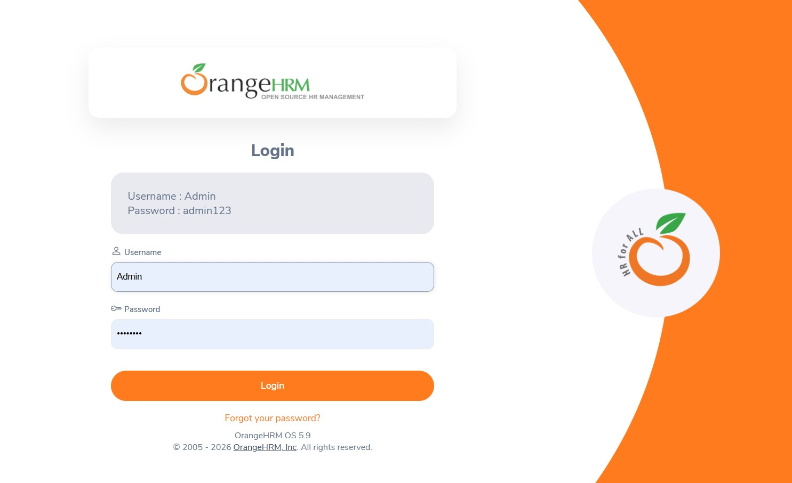
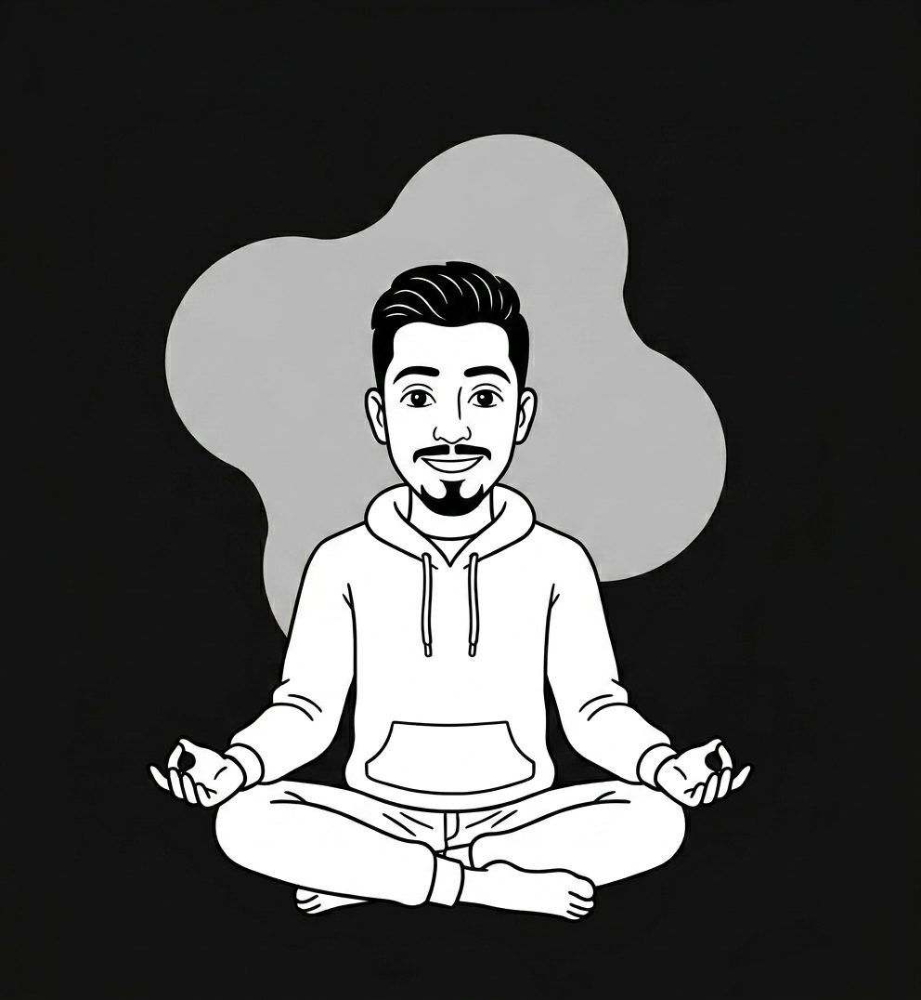
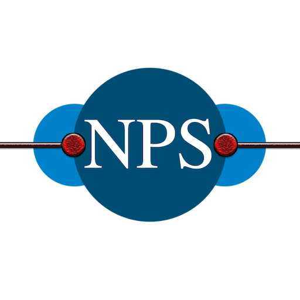

I break things on purpose, so users never have to.

Automated regression test suite for OrangeHRM using Selenium and Python covering login, employee management, and candidate workflows.

Currently working on additional automation projects check back soon
Currently working on additional automation projects check back soon

Nipuna Prabidhik Sewa
Sept 2024 – Present
Started as a QA Trainee in September 2024 and transitioned into a full-time QA Tester role from February 2025. Working across SaaS, e-commerce, and mobile application projects, focused on manual testing and test case design while actively building automation skills using Selenium and Python. Regularly collaborate with clients handling support queries, feedback, and presenting testing outcomes.
Test case writing, QA processes and bug identification across web and mobile apps.
Building automation scripts using Selenium with Python for regression testing.
API testing with Postman, load testing with JMeter to check reliability.
Query level data validation - joins, unions, union all for backend testing.
Bug tracking, sprint planning and ticket workflows.
Presenting testing outcomes, client meetings, handling support and feedback.
Open to opportunities, collaborations, and conversations about quality.